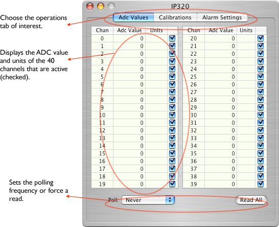
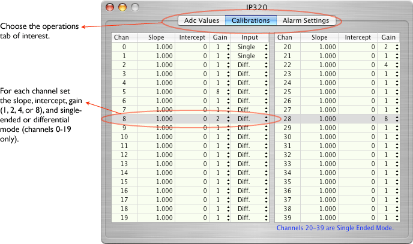
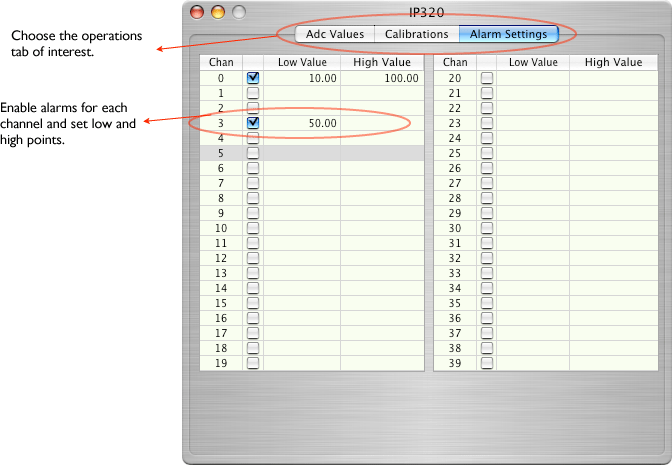

The IP320 monitors 20 differential or 40 single-ended inputs. It has a 12-bit analog-to-digital converter. The IP320 object can only be placed onto an IP Carrier board. The configuration icon looks like this:


